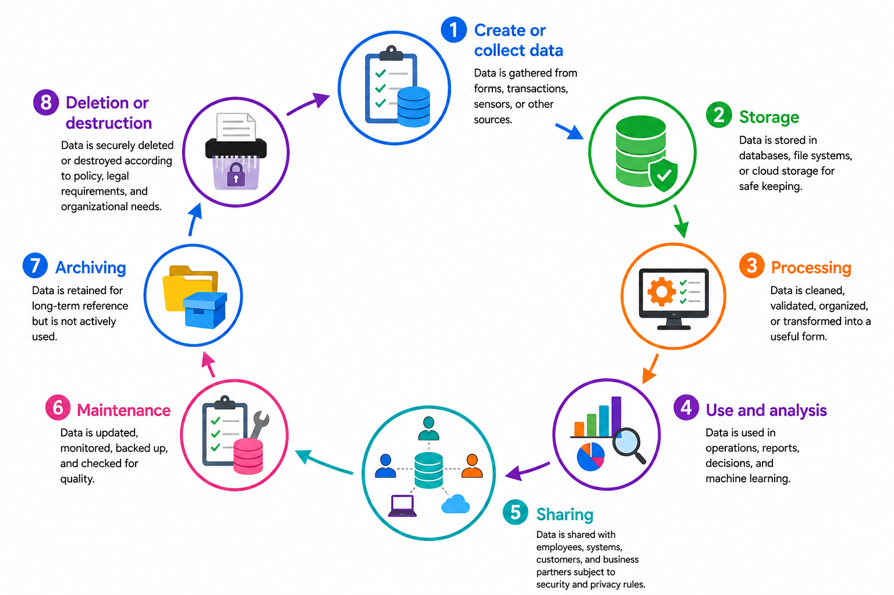

Data Foundations
In the previous chapter, we focused on database modeling and design. However, a strong design alone is not enough. A database also depends on good-quality data, a reliable system environment, and the people and processes that keep everything working properly. This chapter begins by looking at those foundations.
Database System Environment
A database does not operate in isolation. It exists within a database system environment made up of hardware, software, data, people, and procedures. Together, these components provide the foundation for storing, protecting, and delivering information when it is needed.
Hardware includes the physical devices that store and process the data, such as servers, storage systems, and user machines. Software includes the database management system (DBMS), which controls how data is stored, retrieved, and updated. Data is the information being managed, including the database itself and the metadata that describes its structure. People are essential to the system as well. Database administrators manage the system, application developers build the tools that use the data, and end users access the information for daily work and decision-making. Procedures are the rules and methods that guide how the system is used. These include access rules, user roles, security controls, transaction control, and concurrency management.
When these components work together, the database environment remains organized, secure, and reliable.
Comprehension Check 1 of 5
Data Quality Dimensions
Even in a well-managed system, data must still be dependable. Data quality describes how trustworthy, useful, and accurate the data is. High-quality data supports better decisions because it is not only present, but also ready to be used with confidence.
Accuracy means the data reflects reality correctly. Completeness means the needed values are present and nothing important is missing. Consistency means the same fact appears the same way wherever it is stored. Validity means the data follows the correct rules, format, or allowed values. Uniqueness means each real-world item appears only once and is not duplicated unnecessarily. Timeliness means the data is current enough to be useful. Integrity means the data remains reliable through correct relationships and protection from errors.
Together, these dimensions help determine whether data can be trusted. When they are strong, the data is ready to support accurate analysis and sound decisions.
Comprehension Check 2 of 5
Data Life Cycle
Once data is trusted, it still continues to move through the organization. The data life cycle traces that journey from creation to final disposal. It begins when data is created or collected, whether from a form, a transaction, a sensor, or another source. It is then stored so it can be accessed later.
Before data is ready to use, it often goes through processing, where it is cleaned, validated, organized, or transformed into a more useful form. After that, it enters use and analysis, where it supports operations, reports, decision-making, and even machine learning. Data is also shared with employees, systems, customers, or business partners, but always under security and privacy rules. Over time, it requires maintenance so it can be updated, monitored, backed up, and checked for quality. When data is no longer actively needed, it may be archived for long-term reference. Eventually, it is deleted or destroyed according to policy, legal requirements, and organizational needs.

Comprehension Check 3 of 5
Data Governance
Because data moves through so many stages, organizations need clear oversight. Data governance is the framework that guides how data is managed responsibly from creation through archiving and deletion. It helps ensure that data is secure, compliant, high quality, and used effectively throughout its life cycle. Good governance also makes data easier to discover, understand, trust, and use.
Data Ownership
Within that governance framework, someone must be accountable for the data. Data ownership defines who is responsible for a set of data and who makes the policy decisions about it. A data owner is often a senior business leader or department responsible for the data’s use and protection. Owners decide who may access the data, how it may be used, what quality standards it must meet, how long it should be kept, and which privacy and security rules apply. For example, Human Resources is often the owner of employee data.
Comprehension Check 4 of 5
Data Stewardship
If data ownership sets the direction, data stewardship carries it out in practice. Data stewardship focuses on the day-to-day handling of data quality and protection. A data steward helps ensure that the data remains accurate, complete, consistent, and well documented. Stewards may monitor quality, define data terms and standards, correct or coordinate corrections, resolve duplicates or inconsistencies, maintain metadata, and help enforce policy. They are the practical caretakers of trustworthy data.
Quality Data and Latter-day Saint Stewardship
Quality data is more than a technical goal; it is part of responsible stewardship. President Dallin H. Oaks taught that “available information wisely used is far more valuable than multiplied information allowed to lie fallow” (Oaks, 2001). He also reminded us that we are accountable for how we use what we receive.
That counsel fits well with data work. In a world where information is abundant but not always reliable, President Oaks warned that not all information is true and that we must choose our sources carefully (Oaks, 2018). He taught that we should use qualified, honest sources and not confuse popularity or visibility with truth.
Applied to data, this means that accurate, complete, and well-managed information helps people make wise decisions in wisdom and order. Data that is careless, inconsistent, or misleading can weaken trust, but data that is faithful to reality can support good judgment, sound administration, and service to others.
Comprehension Check 5 of 5
Data Sources, Formats, and Provenance and AI
Data is collected and stored in many forms, including spreadsheets, databases, application programming interfaces, text documents, images, audio, and system logs. Before analyzing data, an Information Systems professional must understand where it came from, how it was created, what each field represents, and what limitations may affect its use. A file name or column heading does not provide enough information by itself. Analysts need to examine definitions, units of measurement, dates, categories, record-level meaning, and the process used to collect the data. These details help determine whether the data is appropriate for a particular question.
AI can help professionals summarize documentation, identify possible fields, generate a preliminary data dictionary, or suggest relationships among data sources. However, AI may misunderstand a field, invent a definition, or confuse an example with an official rule. Data provenance provides a record of the origin and movement of data from its source to the final analysis. Maintaining provenance helps analysts reproduce results, explain decisions, detect errors, and respond to questions from managers or auditors. In an AI-enabled workplace, professionals who understand data origins and limitations can prevent incorrect information from being incorporated into automated reports, dashboards, models, or business decisions.
Chapter Completion
Answer all five comprehension questions, then check your work.
Chapter complete
Copy or write down this access code. You will need it later in class to receive your points.
quality-data
References
Oaks, D. H. (2001, April). Focus and priorities. In General Conference (April 2001). The Church of Jesus Christ of Latter-day Saints.
Oaks, D. H. (2018, November). Truth and the plan. In General Conference (November 2018). The Church of Jesus Christ of Latter-day Saints.